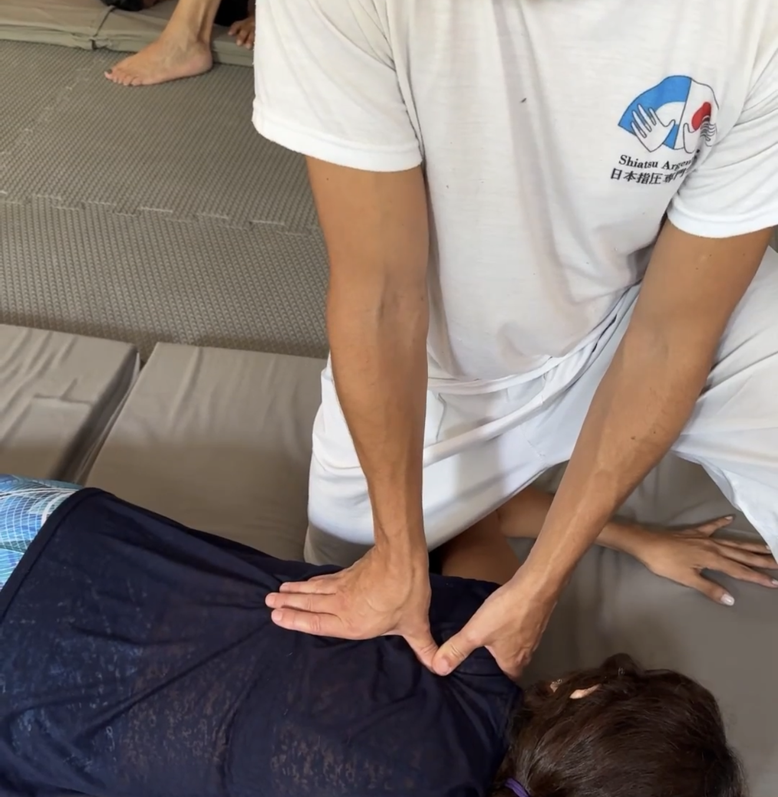
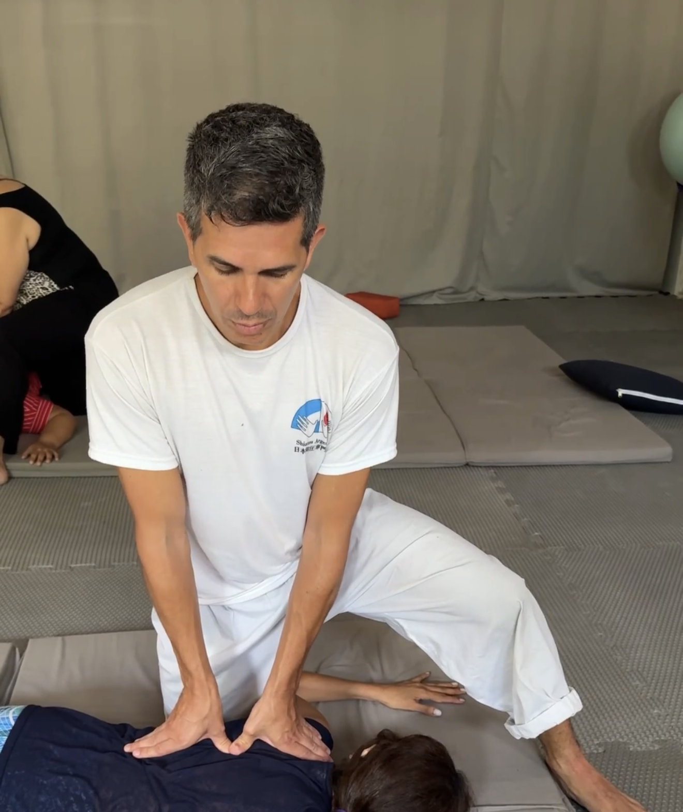
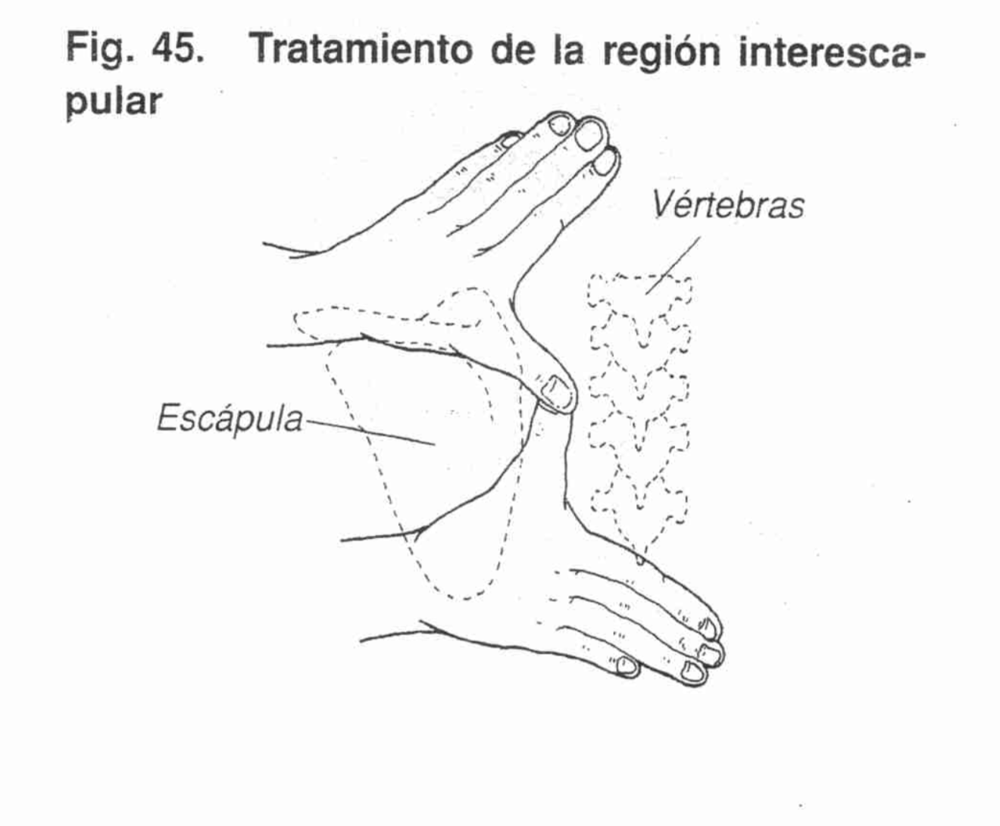
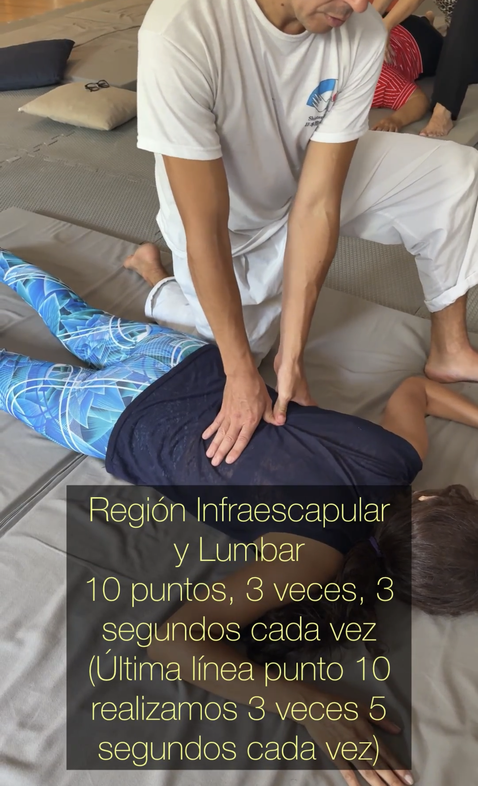
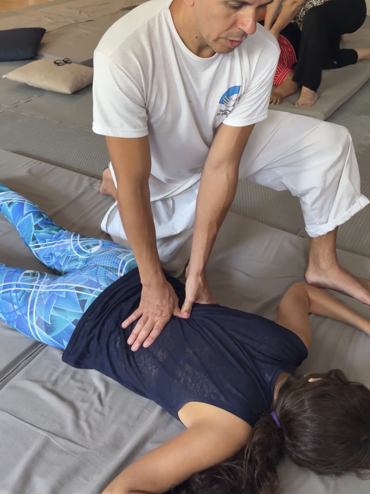

Este protocolo combina la sensibilidad receptiva del Anma tradicional (escucha táctil y sincronización respiratoria) con la precisión neuromuscular del Shiatsu Namikoshi y la estimulación refleja visceral mediante los Puntos Shu del Canal de Vejiga.
El objetivo es descontracturar la masa paravertebral profunda, armonizar el sistema nervioso autónomo y liberar la coraza torácico-diafragmática posterior. Esta fase dorsal constituye el puente indispensable para que el tratamiento abdominal posterior (Anpuku) penetre sin resistencia refleja.
Contacto Inicial, Ritmo Respiratorio y Hamacado Secuencial
1. Contacto con el Paciente y Sincronización:
Posicionamos ambas manos apoyadas suavemente sobre la espalda del paciente. Escuchamos su respiración el tiempo necesario hasta acompasar y sincronizar nuestro ritmo respiratorio con el suyo. No apresurar esta etapa; la escucha táctil dispone al sistema parasimpático del receptor.
2. Ritmo y Hamacado de Sacro:
Nos ubicamos en posición Seiza (o postura lateral cómoda que permita transferir el balanceo desde nuestro propio eje corporal / Tanden). Colocamos una mano en la región dorsal alta y la otra sobre el Sacro. Iniciamos el hamacado rítmico, cuidando que ambas manos trabajen sincronizadas y sin interrumpir el flujo del vaivén en ningún instante.
3. Ritmo y Hamacado de Lumbar:
Tras un par de minutos de hamacado base, retiramos la mano ubicada en dorsal alta y la desplazamos acompasando el ritmo sobre las apófisis espinosas dorsales y lumbares hasta llegar al sacro, situándola a la par de la mano sacral. Se continúa el balanceo y, gradualmente, la mano móvil se aleja siguiendo el ritmo rector de la mano sacral fija, hasta que ambas vuelven a ubicarse una en sacro y otra en dorsal alta. Esta secuencia puede repetirse varias veces.
4. Ritmo y Hamacado de Dorsal (desde Dorsal Media):
Mientras la mano en sacro gobierna el ritmo de hamacado, la mano dorsal alta se acerca progresivamente hacia el sacro, regresa y se asienta en la región dorsal media. Es vital no perder la simetría ni el ritmo. En este momento, la mano en dorsal media asume el rol directriz del balanceo, esperando el acercamiento de la mano sacral.
5. Disminución y Conclusión del Hamacamiento:
Cuando ambas manos se encuentran balanceando en la parte media de la espalda, comienzan a separarse. Nota fundamental de tacto: hasta aquí el hamacado conectaba con el tejido profundo; ahora pasamos a un tacto superficial, escuchando la piel y la fascia exterior. Una mano se aleja hacia el Sacro y la otra hacia el Cráneo. A medida que se aproximan a los extremos, el contacto se va despegando sutilmente hasta perderse sobre el eje longitudinal de la persona, desvaneciendo el estímulo de manera orgánica y armónica.
🎥 Video Demostrativo: Secuencia de Hamacado en Seiza
Shiatsu Namikoshi en Columna (1ª Línea de Vejiga / Puntos Shu)
En el método Shiatsu Namikoshi oficial, la región interescapular se aborda clásicamente distribuyendo 5 o 6 puntos a lo largo de la masa paravertebral.
Al integrar la medicina oriental y el Canal de Vejiga (1ª Línea a 1,5 cun), estimulamos los puntos Shu dorsales que conectan de manera refleja con los órganos internos (Pulmón, Pericardio, Corazón, Diafragma, Hígado, etc.). Ambas aplicaciones coinciden anatómicamente sobre el vientre del músculo erector espinal, descomprimiendo la cadena ganglionar simpática.
Lámina de Referencia: Puntos Shu de Espalda
Consultá el mapa anatómico y la tabla comparativa antes de aplicar la presión en futón.
Operación 5: Región Interescapular
D1/D2 a D7/D8• Postura del paciente: Yace en decúbito prono sin almohada, con la cabeza girada hacia el lado en que trabaja el terapeuta.
• Postura del terapeuta: Kata Hiza (o posición Seiza lateral equilibrada). Rodilla derecha en el suelo a la altura del tronco y pie izquierdo alzado cerca del hombro del receptor.
• Biomecánica y Vector: Presión con pulgar sobre pulgar rigurosamente perpendicular (90°) respecto a la curvatura costal. El peso se transmite desde el centro (Tanden) con codos firmes sin hiperextensión y muñecas neutras; no empujar con la fuerza muscular de los brazos.
• Puntos: 6 puntos coincidentes con los Shu dorsales (V11 a V16 / Pulmón, Pericardio, Corazón, Du Mai).
• Dirección de la línea: Borde interior del músculo paravertebral a 1,5 cun de las apófisis espinosas.
• Frecuencia y tiempo: 3 series progresivas de 3 a 5 segundos de presión estática por punto.



🎥 Práctica Aplicada: Región Interescapular
Operación 6: Región Infraescapular y Lumbar
D8 a L5 / S1• Postura del paciente: Yace en prono sin almohada, cara orientada hacia el terapeuta.
• Postura del terapeuta: Kata Hiza lateral desplazándose hacia la pelvis.
• Tipo de presión y Vector: Pulgar sobre pulgar estrictamente perpendicular. Inclinación de tronco coordinada con la espiración del receptor.
• Número de puntos: 10 puntos continuos (D8 a L5) cubriendo los Shu de Diafragma (V17), Hígado (V18), Bazo (V20), Estómago (V21), Riñón (V23) e Intestino Grueso (V25).
• Frecuencia y tiempo: 3 series de 3 a 5 segundos. * En la 3ª serie, en el punto de L5-S1 se ejerce presión sostenida firme de 5 segundos repetida 3 veces para estabilizar la charnela lumbosacra.


🎥 Práctica Aplicada: Región Infraescapular y Lumbar
Segunda Línea de Vejiga & Dispersión en Espiral (Vórtice)
A. Región Interescapular (2ª Línea - Borde Medial de la Escápula):
Ver lámina emocional V41-V47 →Se aplica la presión perpendicular pulgar sobre pulgar exactamente sobre el borde medial escapular (a 3 cun de la línea media). Aquí se ubican los puntos de resonancia psicoemocional y las Cinco Entidades Espirituales (Wu Shen):
• V41 (Fu Fen) | • V42 (Po Hu - Po) | • V43 (Gao Huang Shu) | • V44 (Shen Tang - Shen) | • V45 (Yi Xi) | • V46 (Ge Guan - Diafragma)
La postura del terapeuta y el ángulo de penetración replican la Operación 5, profundizando en la inserción de los romboides y liberando la tensión torácica retenida.
🎥 Video Demostrativo: 2ª Línea Interescapular
B. Región Infraescapular y Lumbar (V47 Hun Men hacia V52 Zhi Shi):
El terapeuta adopta la postura Kata Hiza o Seiza lateral. A nivel de D9 se localiza V47 (Hun Men — Puerta del Hun), punto clave para drenar el estancamiento de Qi de Hígado, la ira reprimida y la tensión referida en hipocondrios. Se aplican 3 presiones perpendiculares sostenidas de 5 segundos.
Posteriormente, se desciende por la corredera lateral externa cubriendo V48 (Yang Gang), V49 (Yi She - Bazo/Yi), V50 (Wei Cang - Estómago), V51 (Huang Men) hasta alcanzar a nivel de L2 el punto V52 (Zhi Shi — Residencia de la Voluntad). V52 es el resonador por excelencia para tonificar la vitalidad renal, tratar la fatiga vital profunda y descongestionar el cuadrado lumbar y la fascia toracolumbar. El tratamiento se realiza de forma bilateral, iniciando siempre por el lado izquierdo del receptor.
🌪️ Técnica de Dispersión y Liberación en Espiral (Sedación Tisular):
Una vez alcanzada la profundidad adecuada en el tsubo (especialmente en V47 Hun Men, V52 Zhi Shi y a lo largo de los cordones de tensión entre V41 y V52), se aplica una maniobra de dispersión rotacional.
Desde el epicentro más profundo de la presión estática, se inician suaves micromovimientos circulares en sentido antihorario, expandiendo progresivamente el radio en forma de espiral ascendente (efecto vórtice). Esta dinámica descomprime la fascia profunda y drena la estasis energética acumulada en el tsubo, emergiendo paulatinamente hacia la superficie tisular antes de retirar el contacto con lentitud.
Finalización en Decúbito Prono: Hamacado & Descompresión Interapofisiaria
1. Reintegración Rítmica: Repetimos el hamacado armónico de sacro como en el Paso 1, permitiendo que el sistema nervioso asimile el estímulo neuromuscular profundo de las presiones de Shiatsu.
2. Movilización y Descompresión Paravertebral: Colocamos el pulpejo de los dedos en los espacios interespinosos. Ejercemos suaves micro-movilizaciones transversales y longitudinales para liberar la tensión de los ligamentos interespinosos y músculos rotadores, descomprimiendo la columna de dorsal alta a sacro antes de invitar al receptor a pasar a decúbito supino para el trabajo en Hara (Anpuku).
🎥 Video Demostrativo: Cierre con Hamacado y Descompresión